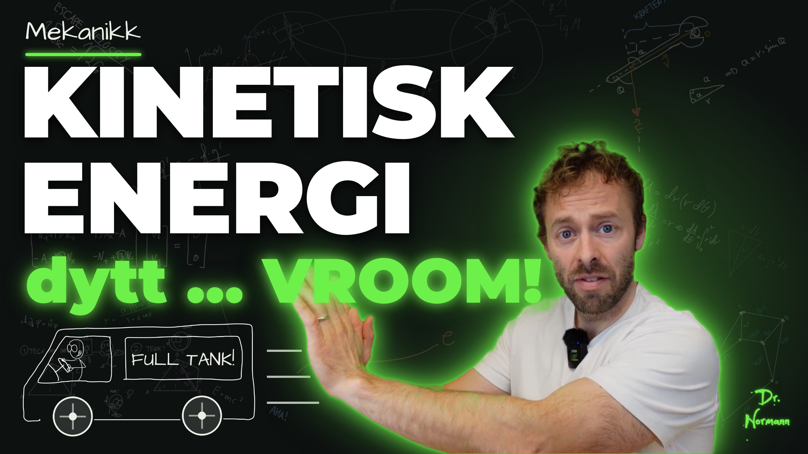

<!DOCTYPE html>
<!-- Animasjon: Kinetisk energi. Tider i T = tid i det klippede opptaket (klipp/edl.json, 220.04 s).
     Scener: kald start (Ben sin stasjon, 6 s) → tittelkort (1.6 s) → hoved (opptaket). M(T) = tid i animasjonen.
     Opptaket av læreren speilvendes (han dytter mot venstre), så bilen kjører mot venstre. -->
<html lang="no"><head><meta charset="utf-8">
<style>
@font-face{font-family:Hand;src:url(../../_verktoy/ArchitectsDaughter-Regular.ttf)}
@font-face{font-family:Comic;font-weight:700;src:url(../../_verktoy/ComicNeue-Bold.ttf)}
:root{--kritt:#ecefe6;--gronn:#6ef04a;--oransje:#f19c2c;--gul:#eee462;--turkis:#56d7b8;--tavle:#0d1110}
html,body{margin:0;width:1920px;height:1080px;overflow:hidden;background:var(--tavle)}
body{font-family:Hand;color:var(--kritt)}
#bg{position:absolute;inset:0;background:url(../../_verktoy/tavle-bakgrunn.webp) center/cover;opacity:.09}
#drlogo{position:absolute;right:30px;top:30px;height:90px;z-index:20}
.a{position:absolute;opacity:0;white-space:nowrap}
.h1{font:400 84px/1 Hand;color:var(--oransje);letter-spacing:.06em}
.h2{font:400 64px/1 Hand;color:var(--gul);letter-spacing:.05em}
.t{font:400 50px/1.25 Hand}
.tl{font:400 40px/1.3 Hand}
.boks{border-radius:6px;padding:24px 34px;font:400 46px/1.3 Hand;white-space:normal}
.gronnboks{background:rgba(110,240,74,.12);border:2px solid rgba(110,240,74,.35)}
.graaboks{background:rgba(236,239,230,.10);border:2px solid rgba(236,239,230,.25)}
.f{font:400 58px/1.2 Hand}
.v{position:relative;display:inline-block}
.v::before{content:'';position:absolute;left:8%;right:10%;top:.02em;border-top:3px solid currentColor}
.v::after{content:'';position:absolute;right:6%;top:-.08em;width:.16em;height:.16em;border:solid currentColor;border-width:3px 3px 0 0;transform:rotate(45deg)}
sub{font-size:.62em}
sup{font-size:.62em}
.p{font-size:.7em;position:relative;top:-.62em;margin-left:.03em}
.pop{font:400 96px/1 Hand;color:var(--gul);letter-spacing:.04em}
.boble{background:#ecefe6;color:#0d1110;border-radius:30px;padding:14px 30px;font:400 46px/1.2 Hand}
.boble::after{content:'';position:absolute;left:60px;bottom:-26px;border:16px solid transparent;border-top:18px solid #ecefe6;border-left:10px solid #ecefe6}
#viskelaer{position:absolute;top:-60px;height:1200px;width:520px;z-index:15;display:none;
  background:linear-gradient(90deg,rgba(13,17,16,0) 0%,#0d1110 30%,#0d1110 70%,rgba(13,17,16,0) 100%)}
#sone{position:absolute;left:1300px;top:420px;width:620px;height:660px;border:4px dashed #f19c2c;box-sizing:border-box;display:none;z-index:30}
svg{overflow:visible}
.brok{display:inline-flex;flex-direction:column;align-items:center;vertical-align:middle;font-size:.8em;line-height:1;margin:0 .14em;position:relative;top:-.1em}.brok>span:first-child{border-bottom:.09em solid currentColor;padding:0 .12em .04em}.brok>span:last-child{padding-top:.04em}
.stryk{position:relative;display:inline-block}
.stryk i{position:absolute;left:-6%;right:-6%;top:50%;border-top:5px solid #eee462;transform:rotate(-18deg) scaleX(0);transform-origin:left;display:block}
</style></head><body>
<div id="bg"></div>

<div id="lag"></div>
<div id="viskelaer"></div>
<div id="sone"></div>
<script>
// ---------- hjelpere ----------
const L = document.getElementById('lag');
const E = [];
const lerp = (a, b, x) => a + (b - a) * x, klemt = x => Math.max(0, Math.min(1, x));
const glatt = x => { x = klemt(x); return x * x * (3 - 2 * x); };
const utglatt = x => { x = klemt(x); return 1 - (1 - x) * (1 - x); };
function lag(html, x, y, inn, ut, type = 'fade', ekstra = {}) {
  const d = document.createElement('div'); d.className = 'a ' + (ekstra.cls || ''); d.innerHTML = html;
  d.style.left = x + 'px'; d.style.top = y + 'px'; if (ekstra.w) { d.style.width = ekstra.w + 'px'; d.style.whiteSpace = 'normal'; }
  if (ekstra.css) d.style.cssText += ekstra.css;
  L.appendChild(d); const o = Object.assign({ el: d, inn, ut, type, varighet: 0.6 }, ekstra); E.push(o); return o;
}
const skriv = (html, x, y, inn, ut, cls, varighet, ekstra = {}) => lag(html, x, y, inn, ut, 'skriv', Object.assign({ cls, varighet: varighet || 1.2 }, ekstra));
const stempel = (html, x, y, inn, ut, rot, css) => lag(`<span class="pop" style="${css || ''}">${html}</span>`, x, y, inn, ut, 'stempel', { rot });
function sti(d, farge, bredde, inn, varighet, ut, ekstra = {}) {
  const ns = 'http://www.w3.org/2000/svg', s = document.createElementNS(ns, 'svg');
  s.setAttribute('width', 1920); s.setAttribute('height', 1080); s.style.cssText = 'position:absolute;left:0;top:0;opacity:0;pointer-events:none';
  const p = document.createElementNS(ns, 'path'); p.setAttribute('d', d); p.setAttribute('pathLength', 1);
  p.setAttribute('stroke', farge); p.setAttribute('stroke-width', bredde); p.setAttribute('fill', ekstra.fyll || 'none');
  p.setAttribute('stroke-linecap', 'round'); p.setAttribute('stroke-linejoin', 'round'); p.style.strokeDasharray = '1 1';
  s.appendChild(p); L.appendChild(s);
  const o = { el: s, p, inn, ut, type: 'sti', varighet, ...ekstra }; E.push(o); return o;
}
const pil = (x1, y1, x2, y2, farge, b, inn, v, ut) => {
  const a = Math.atan2(y2 - y1, x2 - x1), k = 22;
  return sti(`M${x1} ${y1} L${x2} ${y2} M${x2 - k * Math.cos(a - .45)} ${y2 - k * Math.sin(a - .45)} L${x2} ${y2} L${x2 - k * Math.cos(a + .45)} ${y2 - k * Math.sin(a + .45)}`, farge, b, inn, v, ut);
};
const ns = 'http://www.w3.org/2000/svg';
function egen(inn, ut, tegn) { const s = document.createElementNS(ns, 'svg'); s.setAttribute('width', 1920); s.setAttribute('height', 1080);
  s.style.cssText = 'position:absolute;left:0;top:0;opacity:0;pointer-events:none'; L.appendChild(s); const o = { el: s, inn, ut, type: 'egen', tegn }; E.push(o); return o; }
const pilsvg = (x1, y1, x2, y2, farge, b) => { const a = Math.atan2(y2 - y1, x2 - x1), k = 20 + b;
  return `<path d="M${x1} ${y1} L${x2} ${y2} M${x2 - k * Math.cos(a - .45)} ${y2 - k * Math.sin(a - .45)} L${x2} ${y2} L${x2 - k * Math.cos(a + .45)} ${y2 - k * Math.sin(a + .45)}" stroke="${farge}" stroke-width="${b}" fill="none" stroke-linecap="round" stroke-linejoin="round"/>`; };
const vekTekst = (x, y, txt, farge, str = 46) => `<text x="${x}" y="${y}" font-family="Hand" font-size="${str}" fill="${farge}">${txt}</text><path d="M${x + 2} ${y - str * 0.92} l${str * 0.55} 0 m-8 -6 l8 6 l-8 6" stroke="${farge}" stroke-width="3" fill="none" stroke-linecap="round"/>`;

// ---------- bilen (lærerens tegning, speilvendt: fronten mot venstre) ----------
// Bildet er 552×277 ved skala 1. Hjul i (124,222) og (422,220), r 46. Tekstfelt sentrum (378,88).
function bilSVG(o) {
  const s = o.s || 1, x = o.x, y = o.y, vend = !!o.vend, rot = o.rot || 0, k = o.krasj || 0;
  const sq = 1 - 0.13 * k;   // fronten klemmes ved krasj
  const g = vend ? `translate(${x + 552 * s * sq} ${y}) scale(${-s * sq} ${s})` : `translate(${x} ${y}) scale(${s * sq} ${s})`;
  let h = '';
  // fartsstreker bak bilen
  if (o.fart > 0.05) { const bak = vend ? -1 : 1, x0 = vend ? x - 20 : x + 552 * s + 20;
    for (let i = 0; i < 3; i++) { const yy = y + s * (70 + i * 60), l = s * (60 + 80 * o.fart) * (1 + 0.3 * Math.sin(i * 2 + rot / 30));
      h += `<path d="M${x0 + bak * 10} ${yy} l${bak * l} 0" stroke="#ecefe6" stroke-width="${4 * s}" opacity="${0.55 * klemt(o.fart)}" stroke-linecap="round"/>`; } }
  h += `<g transform="${g}">`;
  if (k > 0) h += `<g transform="rotate(${-2 * k} 0 277)">`;
  h += `<image href="elementer/bil.png" width="552" height="277"/>`;
  if (o.sjafor !== false) h += `<image href="elementer/bilsjafor.png" width="552" height="277"/>`;
  if (k > 0.05) h += `<path d="M14 120 l26 18 l-20 22 l28 16 M18 200 l24 -14 l-4 30" stroke="#eee462" stroke-width="4" fill="none" opacity="${k}"/>`;
  for (const [cx, cy] of [[124, 222], [422, 220]]) {
    h += `<g transform="rotate(${vend ? -rot : rot} ${cx} ${cy})"><circle cx="${cx}" cy="${cy}" r="46" fill="#2b2f2d" stroke="#ecefe6" stroke-width="4"/>`;
    h += `<path d="M${cx - 30} ${cy} L${cx + 30} ${cy} M${cx} ${cy - 30} L${cx} ${cy + 30}" stroke="#9aa49e" stroke-width="4"/><circle cx="${cx}" cy="${cy}" r="9" fill="#ecefe6"/></g>`;
  }
  if (k > 0) h += `</g>`;
  h += `</g>`;
  // teksten på bilen (ikke speilvendt)
  const tx = vend ? x + (552 - 378) * s * sq : x + 378 * s * sq;
  h += `<text x="${tx}" y="${y + 104 * s}" text-anchor="middle" font-family="Hand" font-size="${42 * s}" fill="#ecefe6" letter-spacing="1">FULL TANK!</text>`;
  return h;
}
function vei(y, x0, x1, off, op = 1) {   // vei med striper som flytter seg (bilen «kjører» på stedet)
  let h = `<path d="M${x0} ${y} L${x1} ${y}" stroke="#ecefe6" stroke-width="4" opacity="${0.8 * op}"/>`;
  const p = 140, d = ((off % p) + p) % p;
  for (let xx = x0 - p + d; xx < x1; xx += p) { const a = Math.max(xx, x0), b = Math.min(xx + 60, x1); if (b > a) h += `<path d="M${a} ${y + 26} L${b} ${y + 26}" stroke="#9aa49e" stroke-width="5" opacity="${0.7 * op}" stroke-linecap="round"/>`; }
  return h;
}

// ---------- tidslinje ----------
// Tidene under er skrevet i T = tid i klippet til utkast 1 (klipp/edl_utkast1.json). KLIPP oversetter til nytt klipp (klipp/edl.json):
// [gammel T0, gammel T1, ny T0, ny lengde] per bit.
const KLIPP = [[0.0, 7.12, 0.0, 7.12, 0.0], [7.12, 10.52, 7.12, 3.4, 0.0], [10.52, 12.92, 10.52, 2.4, 0.0], [12.92, 16.4, 12.92, 3.48, 0.0], [16.4, 25.76, 16.4, 9.36, 0.0], [25.76, 27.76, 25.76, 2.0, 0.0], [27.76, 44.36, 27.76, 16.6, 0.0], [44.36, 50.76, 44.36, 6.4, 0.0], [50.76, 55.96, 50.76, 5.2, 0.0], [55.96, 84.8, 55.96, 28.84, 0.0], [84.8, 89.96, 84.8, 5.16, 0.0], [89.96, 95.88, 89.96, 6.64, 0.0], [95.88, 105.16, 96.6, 9.28, 0.0], [105.16, 111.36, 105.88, 6.2, 0.0], [111.36, 119.36, 112.08, 8.6, 0.0], [119.36, 122.2, 120.68, 2.84, 0.0], [122.2, 129.52, 123.52, 7.32, 0.0], [129.52, 132.52, 130.84, 3.64, 0.64], [132.52, 140.04, 134.48, 7.52, 0.0], [140.04, 145.28, 142.0, 5.24, 0.0], [145.28, 146.92, 147.24, 1.64, 0.0], [146.92, 157.32, 148.88, 10.4, 0.0], [157.32, 170.4, 159.28, 13.08, 0.0], [170.4, 176.56, 172.36, 6.16, 0.0], [176.56, 179.12, 178.52, 2.56, 0.0], [179.12, 183.16, 181.08, 4.04, 0.0], [183.16, 193.28, 185.12, 10.12, 0.0], [193.28, 199.76, 195.24, 6.48, 0.0], [199.76, 209.2, 201.72, 9.44, 0.0], [209.2, 215.0, 211.16, 5.8, 0.0], [215.0, 218.64, 216.96, 3.64, 0.0], [218.64, 220.04, 220.6, 1.4, 0.0]];   // [gammel T0, gammel T1, ny T0, ny lengde, forskyvning]
const R = T => { for (const [a, b, n, l, d] of KLIPP) { if (T < b) return n + Math.min(Math.max(T - a + d, 0), l); } const s = KLIPP[KLIPP.length - 1]; return s[2] + s[3]; };
const Rinv = t => { for (const [a, b, n, l, d] of KLIPP) { if (t < n + l) return a + Math.max(t - n, 0) - d; } const s = KLIPP[KLIPP.length - 1]; return s[1]; };
const KALD = 6.0, TITTEL = 1.6, HOVED = 222.0;
const M = T => KALD + TITTEL + R(T);
const SLUTT = KALD + TITTEL + HOVED;
window.S = [['kald', KALD], ['tittel', TITTEL], ['hoved', HOVED]];
const START = [0, KALD, KALD + TITTEL];
const SEKSJON = [M(25.76), M(44.36), M(105.16), M(140.04), M(170.40), M(199.76)];
const SKAKER = [];

// --- Kald start: Ben sin stasjon ---
lag('', 510, 110, 0.1, KALD, 'wipe', { varighet: 0.8 });
lag('', 960, 590, 0.2, KALD, 'fade');
lag('<span style="font:400 46px Hand">$$</span>', 960 + 152, 590 + 34, 0.2, KALD, 'fade');
sti('M120 862 L1800 862', '#ecefe6', 4, 0.15, 0.6, KALD);
const PLYSTRER = lag('', 930, 550, 0.3, KALD, 'dash');
egen(0.3, KALD, (s, G) => {   // noter som svever opp mens Dashman plystrer
  let h = ''; for (let i = 0; i < 6; i++) { const t0 = 0.4 + i * 0.5, t = G - t0; if (t < 0 || t > 1.6 || G > 3.5) continue;
    const xx = 930 + 10 - t * 30 + 12 * Math.sin(t * 6 + i), yy = 600 - t * 140;
    h += `<text x="${xx}" y="${yy}" font-family="Hand" font-size="46" fill="${i % 2 ? '#eee462' : '#56d7b8'}" opacity="${klemt(1 - t / 1.6)}">${i % 2 ? '♪' : '♫'}</text>`; }
  s.innerHTML = h;
});
stempel('KLUNK!', 640, 470, 3.35, 4.1, -8, 'font-size:70px');
egen(0.2, KALD, (s, G) => {   // bilen: står ved pumpa, Dashman hopper inn, kjører av gårde mot venstre
  const t = G - 4.35, x = 330 - (t > 0 ? 260 * t * t : 0), fart = klemt(t / 1.0);
  s.innerHTML = bilSVG({ x, y: 593, s: 1, rot: t > 0 ? -(260 * t * t) / 46 * 57.3 : 0, sjafor: G > 4.15, fart });
});

// --- Tittelkort ---
lag('', 0, 0, KALD, KALD + TITTEL, 'tittelkort');

// --- A: Hva er kinetisk energi? (T 0–25.76) ---
const A0 = M(0), A1 = SEKSJON[0];
skriv('KINETISK ENERGI', 90, 60, A0 + 0.1, A1, 'h1', 1.2);
sti('M90 160 C350 152 600 165 790 156', '#f19c2c', 5, A0 + 1.0, 0.6, A1);
const xA = T => T < 1.5 ? 398 : 398 - 260 * utglatt((T - 1.5) / 3.0);
const offA = T => T < 2.5 ? 0 : T < 4.5 ? 160 * (T - 2.5) * (T - 2.5) / 4 : 160 * (1 + (T - 4.5));
egen(A0, A1, (s, G) => {
  const T = G - A0, x = xA(T), off = offA(T), fart = klemt((398 - x) / 180) * (T < 4.5 ? 1 : 0.7) + (T > 4 ? 0.5 : 0);
  let h = vei(862, 60, 1250, off, 1);
  h += bilSVG({ x, y: 593, s: 1, rot: -((398 - x) + off) / 46 * 57.3, fart: T > 1.6 ? Math.min(1, fart) : 0 });
  const f = T > 1.45 && T < 2.4 ? Math.sin(Math.PI * (T - 1.45) / 0.95) : 0;   // dyttet ved «Ah!»
  if (f > 0.02) { h += pilsvg(x + 552, 800, x + 552 - 220 * f, 800, '#6ef04a', 8) + vekTekst(x + 552 - 200 * f, 770, 'F', '#6ef04a'); }
  if (T > 13.3) { const k = klemt((T - 13.3) / 0.6); h += `<g opacity="${k}">` + pilsvg(x + 200, 560, x + 20, 560, '#f19c2c', 7) + vekTekst(x + 80, 540, 'v', '#f19c2c') + '</g>'; }
  s.innerHTML = h;
});
stempel('DYTT!', 860, 470, M(1.7), M(2.9), 8, 'font-size:80px');
skriv('Arbeid = overføring av energi', 90, 190, M(7.3), A1, 't', 2.2);
skriv('Hvor ble energien av?', 90, 270, M(10.7), A1, 't', 1.4, { css: 'color:#eee462' });
skriv('→ den ligger lagret i <span style="color:#f19c2c">bevegelsen</span>', 640, 270, M(13.5), A1, 't', 2.0);
lag('', 70, 360, M(16.5), A1, 'boks', { cls: 'boks gronnboks', w: 1150, css: 'height:150px;padding:14px 30px' });
skriv('energi et legeme har fordi det beveger seg:', 100, 372, M(16.7), A1, 'tl', 2.6);
skriv('<span style="color:#6ef04a">bevegelsesenergi</span>', 100, 430, M(20.5), A1, 't', 1.2);
skriv('= <span style="color:#6ef04a">kinetisk energi</span> &nbsp;E<sub>k</sub>', 520, 430, M(24.1), A1, 't', 1.4);

// --- B: Dytter bilen i gang med en variabel kraft (T 25.76–44.36) ---
const B0 = SEKSJON[0], B1 = SEKSJON[1];
skriv('VI DYTTER BILEN I GANG', 90, 60, B0 + 0.2, B1, 'h2', 1.3);
// kraften (relativ) i takt med dyttene til læreren, og bevegelsen den gir
const bump = (T, a, b, h) => (T > a && T < b) ? h * Math.sin(Math.PI * (T - a) / (b - a)) : 0;
const fB = T => bump(T, 27.9, 29.7, 0.55) + bump(T, 29.5, 31.3, 1.6) + bump(T, 31.0, 33.0, 0.95);
const BT = [], BX = [], BV = []; { let x = 0, v = 0; const dt = 1 / 600; for (let T = 27.8; T <= 44.5; T += dt) { BT.push(T); BX.push(x); BV.push(v); v += fB(T) * dt; x += v * dt; } }
const iB = T => Math.max(0, Math.min(BT.length - 1, Math.round((T - 27.8) * 600)));
const SKB = 150 / BX[iB(33.0)];   // 170 px forflytning mens læreren dytter
const xB = T => 398 - SKB * BX[iB(T)];
egen(B0, B1, (s, G) => {
  const T = Rinv(G - M(0)); let x = xB(T), off = 0;
  if (x < 120) { off = 120 - x; x = 120; }      // «kameraet» følger bilen
  const v = SKB * BV[iB(T)];
  let h = vei(862, 60, 1250, off, 1);
  h += bilSVG({ x, y: 593, s: 1, rot: -(398 - xB(T)) / 46 * 57.3, fart: klemt(v / 120) });
  const f = fB(T);
  if (f > 0.03) h += pilsvg(x + 552, 800, x + 552 - 150 * f, 800, '#6ef04a', 8) + vekTekst(x + 552 - 130 * f - 10, 770, 'F', '#6ef04a');
  if (T > 26.0 && T < 28.2) h += `<text x="${x + 200}" y="${560}" font-family="Hand" font-size="46" fill="#56d7b8" opacity="${klemt((T - 26) / 0.4)}">v<tspan font-size="30" dy="8">0</tspan><tspan dy="-8"> = 0</tspan></text>`;
  if (T > 32.7) { const k = klemt((T - 32.7) / 0.5); h += `<g opacity="${k}">` + pilsvg(x + 260, 560, x + 260 - 80 - 120 * klemt(v / 150), 560, '#f19c2c', 7) + vekTekst(x + 200, 540, 'v', '#f19c2c') + '</g>'; }
  // liten strekningsbit dx under bilen
  if (T > 40.4) { const k = klemt((T - 40.4) / 0.4), xs = 820; h += `<g opacity="${k}"><path d="M${xs} 930 L${xs - 70} 930" stroke="#f19c2c" stroke-width="6"/><path d="M${xs} 915 l0 30 M${xs - 70} 915 l0 30" stroke="#f19c2c" stroke-width="4"/>` + vekTekst(xs - 60, 990, 'dx', '#f19c2c', 44) + '</g>'; }
  s.innerHTML = h;
});
skriv('kraften kan variere: litt … mye … litt', 90, 170, M(29.6), B1, 't', 2.2, { css: 'color:#6ef04a' });
skriv('bilen får fart', 90, 250, M(32.8), B1, 't', 1.0, { css: 'color:#f19c2c' });
lag('', 70, 340, M(34.4), B1, 'boks', { cls: 'boks graaboks', w: 760, css: 'height:120px;padding:10px 30px' });
skriv('arbeidet: &nbsp;W = ∫ <span class="v">F</span> · d<span class="v">x</span>', 100, 352, M(37.1), B1, 'f', 2.4);
skriv('kraft ganger strekning, bit for bit', 90, 485, M(38.6), B1, 'tl', 2.0, { css: 'color:#9aa49e' });

// --- C: Hvor kommer ½mv<span class="p">2</span> fra? (T 44.36–105.16) ---
const C0 = SEKSJON[1], C1 = SEKSJON[2];
skriv('HVOR KOMMER <span class="brok"><span>1</span><span>2</span></span>mv<span class="p">2</span> FRA?', 90, 60, C0 + 0.2, C1, 'h2', 1.3);
const fs = 'font-size:54px';
skriv('Newtons 2. lov: &nbsp;F = m · a', 90, 170, M(45.9), C1, 'f', 2.6, { css: fs });
skriv('a = <span class="brok"><span>dv</span><span>dt</span></span>', 90, 250, M(51.0), C1, 'f', 1.0, { css: fs });
skriv('dx = v · dt', 380, 262, M(53.8), C1, 'f', 1.0, { css: fs + ';color:#56d7b8' });
skriv('W = ∫ F dx', 90, 370, M(58.3), C1, 'f', 1.4, { css: fs });
skriv('= ∫ m <span class="brok"><span>dv</span><span class="stryk">d<i></i>t</span></span> · v <span class="stryk">dt<i></i></span>', 125, 450, M(63.2), C1, 'f', 2.6, { css: fs, stryk: M(67.4) });
skriv('= ∫ m v dv', 125, 560, M(70.2), C1, 'f', 1.4, { css: fs });
lag('', 70, 650, M(101.4), C1, 'boks', { cls: 'boks gronnboks', w: 600, css: 'height:110px;padding:6px 26px' });
skriv('W = <span class="brok"><span>1</span><span>2</span></span> · v · mv = <span class="brok"><span>1</span><span>2</span></span> mv<span class="p">2</span>', 90, 660, M(100.0), C1, 'f', 2.4, { css: fs });
// grafen mv mot v
const OX = 760, OY = 860, GX = 1180, GY = 360;
pil(OX, OY + 12, OX, 260, '#ecefe6', 4, M(75.4), 0.7, C1);
pil(OX - 12, OY, 1260, OY, '#ecefe6', 4, M(75.8), 0.7, C1);
skriv('mv', OX - 80, 236, M(76.8), C1, 't', 0.4);
skriv('v', 1250, OY - 64, M(79.3), C1, 't', 0.3);
lag('<div style="background:#eee462;color:#0d1110;padding:4px 16px;font:400 38px Hand;transform:rotate(-4deg)">v, ikke t!</div>', 1080, 960, M(79.6), C1, 'stempel', { rot: -4 });
lag(`<svg width="${GX - OX}" height="${OY - GY}"><polygon points="0,${OY - GY} ${GX - OX},${OY - GY} ${GX - OX},0" fill="rgba(236,239,230,.30)"/></svg>`, OX, GY, M(87.3), C1, 'wipe', { varighet: 1.6 });
sti(`M${OX} ${OY} L${GX + 40} ${GY - 40}`, '#6ef04a', 6, M(82.6), 1.4, C1);
skriv('rett linje', GX - 20, GY - 110, M(83.2), C1, 'tl', 0.8, { css: 'color:#6ef04a' });
skriv('arealet = ∫ m v dv', 820, 300, M(87.6), C1, 'tl', 1.4, { css: 'color:#9aa49e' });
skriv('Areal av trekant: &nbsp;A = <span class="brok"><span>1</span><span>2</span></span> · g · h', 1240, 290, M(91.6), C1, 'f', 2.4, { css: 'font-size:44px;color:#56d7b8' });
sti(`M${OX} ${OY + 50} L${OX} ${OY + 62} L${GX} ${OY + 62} L${GX} ${OY + 50}`, '#f19c2c', 4, M(96.1), 0.6, C1);
skriv('g = v', (OX + GX) / 2 - 50, OY + 66, M(96.2), C1, 'tl', 0.5, { css: 'color:#f19c2c' });
sti(`M${GX + 20} ${OY} L${GX + 32} ${OY} L${GX + 32} ${GY} L${GX + 20} ${GY}`, '#f19c2c', 4, M(98.0), 0.6, C1);
skriv('h = mv', GX + 44, GY + 10, M(98.0), C1, 'tl', 0.5, { css: 'color:#f19c2c' });

// --- D: Kinetisk energi og arbeid-energi-setningen (T 105.16–140.04) ---
const D0 = SEKSJON[2], D1 = SEKSJON[3];
skriv('KINETISK ENERGI', 90, 60, D0 + 0.2, D1, 'h1', 1.2, { css: 'font-size:72px' });
lag('', 70, 170, M(105.4), D1, 'boks', { cls: 'boks gronnboks', w: 560, css: 'height:120px;padding:4px 30px' });
skriv('E<sub>k</sub> = <span class="brok"><span>1</span><span>2</span></span> mv<span class="p">2</span>', 110, 178, M(105.7), D1, 'f', 1.2, { css: 'font-size:72px' });
skriv('arbeid → bevegelsesenergi', 720, 205, M(111.6), D1, 't', 2.0);
skriv('(energien forsvinner ikke)', 720, 270, M(113.9), D1, 'tl', 1.4, { css: 'color:#9aa49e' });
skriv('Hadde bilen fart fra før (v<sub>0</sub>):', 90, 360, M(119.5), D1, 't', 2.0, { css: 'color:#eee462' });
skriv('W = <span class="brok"><span>1</span><span>2</span></span> mv<span class="p">2</span> − <span class="brok"><span>1</span><span>2</span></span> mv<sub>0</sub><span class="p">2</span> = ΔE<sub>k</sub>', 90, 430, M(123.0), D1, 'f', 3.0, { css: 'font-size:56px' });
lag('', 70, 560, M(129.7), D1, 'boks', { cls: 'boks graaboks', w: 1150, css: 'height:200px;padding:10px 30px' });
skriv('ARBEID-ENERGI-SETNINGEN', 100, 568, M(130.0), D1, 'tl', 1.4, { css: 'letter-spacing:.08em;color:#56d7b8' });
skriv('W<sub>ΣF</sub> = ΔE<sub>k</sub>', 100, 620, M(133.0), D1, 'f', 1.0);
skriv('arbeidet som summen av kreftene gjør = endringen i kinetisk energi', 100, 700, M(133.8), D1, 'tl', 4.6, { css: 'font-size:36px;color:#9aa49e' });
egen(M(111.5), D1, (s, G) => {
  const T = Rinv(G - M(0)), k = klemt((T - 111.5) / 0.6), off = 200 * (T - 111.5);
  s.innerHTML = `<g opacity="${k}">` + vei(1000, 60, 1250, off, 1) + bilSVG({ x: 260, y: 1000 - 0.55 * 267, s: 0.55, rot: -off / (46 * 0.55) * 57.3, fart: 0.8 }) + '</g>';
});

// --- E: «Ok … det ble litt nerdete» – poenget (T 140.04–170.40) ---
const E0 = SEKSJON[3], E1 = SEKSJON[4];
lag('', 1080, 300, M(140.4), M(147.0), 'fade');
stempel('???', 1150, 210, M(141.4), M(147.0), 10, 'font-size:80px');
skriv('Litt nerdete? 🤓', 90, 80, M(141.3), E1, 'h2', 1.0);
skriv('Hang du med på integralene?', 90, 180, M(144.0), M(147.0), 't', 1.2, { css: 'color:#9aa49e' });
skriv('Ikke så farlig! 😅', 600, 260, M(145.5), M(147.0), 't', 0.8, { css: 'color:#eee462' });
skriv('arbeid', 90, 200, M(147.6), E1, 't', 0.6);
// læreren dytter Dashman ved «gjør jeg et arbeid på et legeme»
egen(M(148.4), M(152.2), (s, G) => {
  const T = Rinv(G - M(0)), k = klemt((T - 148.4) / 0.4), u = klemt((T - 149.98) / 1.6), x = 800 - 900 * u * (2 - u) * 0.9, y = 660 - 260 * Math.sin(Math.PI * Math.min(u * 1.1, 1)), r = -540 * u;
  let h = `<g opacity="${k * (1 - klemt((T - 151.7) / 0.4))}"><image href="elementer/dash.png" x="${x}" y="${y}" width="120" height="240" transform="rotate(${r} ${x + 60} ${y + 120})"/></g>`;
  if (T > 149.98 && T < 150.7) h += `<text x="${x + 40}" y="${y - 20}" font-family="Hand" font-size="56" fill="#eee462">wiii!</text>`;
  s.innerHTML = h;
});
stempel('DYTT!', 620, 520, M(150.0), M(151.0), -8, 'font-size:80px');
pil(270, 232, 380, 232, '#ecefe6', 5, M(150.6), 0.4, E1);
skriv('tilført energi', 400, 200, M(150.8), E1, 't', 1.0);
pil(720, 232, 830, 232, '#ecefe6', 5, M(154.6), 0.4, E1);
skriv('lagret som <span style="color:#f19c2c">bevegelse</span>', 850, 200, M(154.8), E1, 't', 1.4);
lag('', 300, 320, M(159.0), E1, 'boks', { cls: 'boks gronnboks', w: 640, css: 'height:170px;padding:4px 30px' });
skriv('E<sub>k</sub> = <span class="brok"><span>1</span><span>2</span></span> mv<span class="p">2</span>', 400, 336, M(160.3), E1, 'f', 1.2, { css: 'font-size:100px' });
skriv('<span style="color:#6ef04a">2</span> · E<sub>k</sub> = <span class="brok"><span>1</span><span>2</span></span> · (<span style="color:#6ef04a">2</span>m) · v<span class="p">2</span>', 330, 560, M(163.2), E1, 'f', 1.6);
skriv('dobbel masse → dobbel energi', 330, 650, M(164.7), E1, 'tl', 1.4, { css: 'color:#6ef04a;font-size:34px' });
skriv('<span style="color:#eee462">2<span class="p">2</span></span> · E<sub>k</sub> = <span class="brok"><span>1</span><span>2</span></span> · m · (<span style="color:#eee462">2</span>v)<span class="p">2</span>', 330, 730, M(166.5), E1, 'f', 1.6);
skriv('= <span style="color:#eee462">4</span> · E<sub>k</sub>', 900, 742, M(168.0), E1, 'f', 0.8);
stempel('FIRE!', 960, 860, M(168.2), E1, -8, 'font-size:84px');

// --- F: Eksempel (T 170.40–199.76) ---
const F0 = SEKSJON[4], F1 = SEKSJON[5];
skriv('EKSEMPEL', 90, 60, F0 + 0.2, F1, 'h2', 1.0);
skriv('m = 1000 kg, &nbsp;v = 50 km/h = 13.9 m/s', 90, 160, M(171.6), F1, 't', 3.2);
skriv('E<sub>k</sub> = <span class="brok"><span>1</span><span>2</span></span> · 1000 kg · (13.9 m/s)<span class="p">2</span> ≈ <span style="color:#6ef04a">96 kJ</span>', 90, 240, M(177.0), F1, 't', 3.0);
skriv('≈ 100 kJ', 920, 320, M(181.7), F1, 't', 0.8, { css: 'color:#9aa49e' });
skriv('v = 100 km/h = 27.8 m/s', 90, 400, M(184.9), F1, 't', 1.8);
skriv('E<sub>k</sub> ≈ <span style="color:#eee462">390 kJ</span> ≈ 400 kJ', 90, 470, M(188.6), F1, 't', 2.0);
stempel('× 4 !', 760, 450, M(189.0), F1, -6, 'font-size:90px');
skriv('bremselengde:', 700, 640, M(193.5), F1, 'tl', 1.0, { css: 'color:#9aa49e' });
skriv('50 km/h', 700, 700, M(194.6), F1, 'tl', 0.5);
lag('<div style="width:110px;height:24px;background:#6ef04a;border-radius:4px"></div>', 880, 716, M(194.8), F1, 'wipe', { varighet: 0.5 });
skriv('100 km/h', 700, 760, M(195.3), F1, 'tl', 0.5);
lag('<div style="width:440px;height:24px;background:#eee462;border-radius:4px"></div>', 880, 776, M(195.5), F1, 'wipe', { varighet: 1.0 });
skriv('Pass på, sjåfører! ⚠️', 700, 860, M(197.2), F1, 't', 1.2, { css: 'color:#f19c2c' });
egen(F0, F1, (s, G) => {
  const T = Rinv(G - M(0)), v = T < 184.9 ? 300 : 600, off = T < 184.9 ? 300 * (T - 170.4) : 300 * (184.9 - 170.4) + 600 * (T - 184.9);
  s.innerHTML = vei(1000, 60, 640, off, 1) + bilSVG({ x: 90, y: 1000 - 0.8 * 267, s: 0.8, rot: -off / (46 * 0.8) * 57.3, fart: v / 600 });
});

// --- G: Å stoppe bilen – og en kollisjon (T 199.76–220.04) ---
const G0 = SEKSJON[5], G1 = SLUTT;
skriv('Å STOPPE BILEN', 90, 60, G0 + 0.2, G1, 'h2', 1.0);
const XS = 850;   // bilen står med fronten mot muren (x = XS + 554) rett foran hånda til læreren; Dashman havner der læreren ser
const xG = T => {
  if (T < 202.9) return -540 + 319.6 * (T - 199.9);
  if (T < 205.6) { const u = (T - 202.9) / 2.7; return XS - 431 * (1 - u) * (1 - u); }
  if (T < 208.4) return XS;
  if (T < 209.6) { const u = (T - 208.4) / 1.2; return XS - 1452 * u * u; }       // rygger ut
  if (T < 211.0) { const u = (T - 209.6) / 1.4; return -602 + 1452 * u; }         // full fart mot muren
  return XS;
};
const vG = T => (xG(T + 0.02) - xG(T - 0.02)) / 0.04;
egen(G0, G1, (s, G) => {
  const T = Rinv(G - M(0)), x = xG(T), v = vG(T), k = T > 211.0 ? klemt((T - 211.0) / 0.12) : 0;
  let h = '';
  // muren (kollisjon)
  if (T > 209.3) { const m = klemt((T - 209.3) / 0.4); h += `<g opacity="${m}">`;
    for (let r = 0; r < 8; r++) for (let c = 0; c < 2; c++) h += `<rect x="${XS + 554 + c * 18 - (r % 2) * 9}" y="${560 + r * 38}" width="18" height="38" fill="#a0523a" stroke="#0d1110" stroke-width="3"/>`;
    h += '</g>'; }
  h += vei(862, 60, XS + 554, 0, 1);
  // bremsespor
  if (T > 202.9 && T < 208.4) { const a = XS - 431 + 552 - 124, b = x + 552 - 124; h += `<path d="M${a} 864 L${b} 864" stroke="#555" stroke-width="10" opacity=".8"/>`; }
  h += bilSVG({ x, y: 593, s: 1, vend: true, rot: x / 46 * 57.3, fart: klemt(Math.abs(v) / 500), krasj: k });
  // bremsekraft mot fartsretningen
  if (T > 202.95 && T < 205.6) { const f = Math.sin(Math.PI * klemt((T - 202.95) / 2.65)); h += pilsvg(x + 552, 800, x + 552 - 200 * f, 800, '#6ef04a', 8) + vekTekst(x + 552 - 180 * f, 770, 'F', '#6ef04a'); }
  if (T > 200.2 && T < 202.9) h += `<g opacity="${klemt((T - 200.2) / 0.4)}">` + pilsvg(x + 300, 560, x + 460, 560, '#f19c2c', 7) + vekTekst(x + 370, 540, 'v', '#f19c2c') + '</g>';
  // røyk og stjerner etter krasjet
  if (T > 211.0) { const t = T - 211.0;
    for (let i = 0; i < 5; i++) { const tt = t - i * 0.15; if (tt < 0 || tt > 2.5) continue; h += `<circle cx="${XS + 522 - 30 * i + 20 * tt}" cy="${600 - 90 * tt}" r="${20 + 25 * tt}" fill="#9aa49e" opacity="${0.35 * (1 - tt / 2.5)}"/>`; }
    const cx = x + 552 - 270, cy = 640;
    for (let i = 0; i < 4; i++) { const a = t * 4 + i * Math.PI / 2; h += `<text x="${cx + 70 * Math.cos(a)}" y="${cy + 22 * Math.sin(a)}" font-size="40" fill="#eee462" text-anchor="middle">★</text>`; }
  }
  s.innerHTML = h;
});
skriv('samme arbeid – motsatt vei', 90, 170, M(205.0), M(209.2), 't', 2.0, { css: 'color:#6ef04a' });
skriv('W = 0 − <span class="brok"><span>1</span><span>2</span></span> mv<span class="p">2</span> = −E<sub>k</sub>', 90, 250, M(206.2), M(209.2), 'f', 2.0, { css: 'font-size:54px' });
skriv('… for eksempel i en kollisjon', 90, 170, M(209.4), G1, 't', 1.6, { css: 'color:#eee462' });
stempel('KRASJ!', 1000, 380, M(211.0), M(213.0), -10, 'font-size:120px;color:#f19c2c');
SKAKER.push([M(211.0), 0.7, 18]);
lag('<div class="boble">Au … men ja da! 👍</div>', 880, 440, M(214.0), G1, 'stempel', { rot: -3 });
lag('', 70, 250, M(215.6), G1, 'boks', { cls: 'boks gronnboks', w: 540, css: 'height:120px;padding:4px 30px' });
skriv('E<sub>k</sub> = <span class="brok"><span>1</span><span>2</span></span> mv<span class="p">2</span>', 110, 256, M(215.8), G1, 'f', 1.0, { css: 'font-size:66px' });
skriv('Prøv deg på noen oppgaver! ✏️', 660, 280, M(217.0), G1, 't', 1.4);
lag('', 660, 360, M(218.4), G1, 'fade');
skriv('Snakkes!', 1000, 350, M(218.9), G1, 't', 0.6, { css: 'color:#eee462' });

// ---------- tegning av et bilde ----------
const sone = document.getElementById('sone');
const OVERGANG = SEKSJON;
function viskX(G) { for (const s of OVERGANG) { const k = (G - (s - 0.45)) / 0.9; if (k >= 0 && k <= 1) return { x: lerp(-300, 2220, k), s }; } return null; }
window.render = function (n, t) {
  const G = START[n] + t, V = viskX(G);
  for (const o of E) {
    const slutterHer = V && Math.abs(o.ut - V.s) < 0.02;
    const synlig = G >= o.inn && (G < o.ut || (slutterHer && G < o.ut + 0.45));
    const venstre = o.type === 'egen' || o.type === 'sti' ? 0 : (parseFloat(o.el.style.left) || 0);
    const kutt = slutterHer ? Math.max(0, V.x - 160 - venstre) : 0;
    if (o.type === 'egen') { o.el.style.opacity = synlig ? 1 : 0; if (synlig) o.tegn(o.el, G); o.el.style.clipPath = kutt ? `inset(0 0 0 ${kutt}px)` : ''; continue; }
    if (o.type === 'sti') { o.el.style.opacity = synlig ? 1 : 0; o.p.style.strokeDashoffset = 1 - klemt((G - o.inn) / o.varighet); o.el.style.clipPath = kutt ? `inset(0 0 0 ${kutt}px)` : ''; continue; }
    const el = o.el; el.style.opacity = synlig ? 1 : 0; if (!synlig) continue;
    const x = (G - o.inn) / o.varighet; let hoyre = 0;
    el.style.transform = '';
    if (o.type === 'skriv' || o.type === 'wipe') hoyre = 100 - 100 * glatt(x);
    else if (o.type === 'tittelkort') { el.style.opacity = glatt((G - o.inn) / 0.25); el.style.transform = `scale(${1.04 - 0.04 * glatt((G - o.inn) / o.varighet / 2.5)})`; }
    else if (o.type === 'fade') el.style.opacity = glatt((G - o.inn) / 0.4);
    else if (o.type === 'boks') { el.style.opacity = glatt((G - o.inn) / 0.35); el.style.transform = `scale(${lerp(0.94, 1, glatt((G - o.inn) / 0.35))})`; }
    else if (o.type === 'stempel') { const k = klemt((G - o.inn) / 0.22); const sk = k < 1 ? lerp(2.2, 1, glatt(k)) : 1 + 0.03 * Math.sin((G - o.inn) * 9); el.style.transform = `rotate(${o.rot || 0}deg) scale(${sk})`; el.style.opacity = Math.min(k * 2, 1, klemt((o.ut - G) / 0.25)); }
    else if (o.type === 'dash') {   // Dashman plystrer (vipper litt), hopper inn i bilen
      el.style.opacity = glatt((G - o.inn) / 0.4) * (1 - klemt((G - 4.0) / 0.15));
      const j = klemt((G - 3.6) / 0.5), dx = -280 * j, dy = -160 * Math.sin(Math.PI * j) + 20 * j;
      el.style.transform = `translate(${dx}px, ${dy}px) rotate(${G < 3.6 ? 3 * Math.sin(G * 5) : -20 * j}deg) scale(${1 - 0.4 * j})`;
    }
    if (o.stryk) el.querySelectorAll('.stryk i').forEach(i => i.style.transform = `rotate(-18deg) scaleX(${klemt((G - o.stryk) / 0.4)})`);
    el.style.clipPath = (hoyre || kutt) ? `inset(-30% ${hoyre}% -30% ${kutt ? kutt + 'px' : '-2%'})` : '';
  }
  let sk = 0; for (const [t0, v, a] of SKAKER) { const tt = G - t0; if (tt >= 0 && tt < v) sk = a * (1 - tt / v); }
  L.style.transform = sk ? `translate(${sk * Math.sin(G * 83)}px, ${sk * Math.cos(G * 71)}px)` : '';
  const vk = document.getElementById('viskelaer');
  if (V) { vk.style.display = 'block'; vk.style.left = (V.x - 260) + 'px'; vk.style.transform = 'skewX(-12deg)'; } else vk.style.display = 'none';
  sone.style.display = window.VIS_SONE ? 'block' : 'none';
};
window.VIS_SONE = false;
</script>
</body></html>
